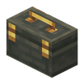

青色工具箱：水路与泵房的管件箱。
参数
颜色青色
形态手持/放置
改色染料右键
详细教程
拎在手上的背包
青工具箱装的是「水」相关的东西：管件、阀门备件、密封圈、水桶。拿在手上右键打开，和快捷栏绑定后，修管道时那一格的零件会自动补，泡在水里的作业不用反复上岸。
放下与改色
放下后是泵房里的小备件站，内容保留，挖走还在；接比较器能看余量。它的青色和蓝色管道几乎同色，放在管廊旁边像设备的一部分；染料右键可以改色。
按颜色分工
青色代表冷却与净水：冷却塔下一箱替换管件，净水间一箱滤芯，液罐区一箱取样瓶。和青色桌布、青色手轮配成一组，整条水路从阀门到台面都是一个颜色。
- 与快捷栏绑定后，修管道时那一格的零件会自动补，泡在水里也不用上岸。
- 放在泵房或液罐旁边，和青色管道几乎同色，像设备自带的备件箱。
- 接比较器看管件余量，抢修前先确认密封圈还够不够。
把它拿在手上右键，就是一只随身携带的便携背包：机房维保时，滤芯、软管这些零碎不用专门回仓库拿。
获取方式
这个物品没有合成配方：它由工具或机器直接生成/放置（例如用扳手、连接器、部署器，或作为其他配方的产物）。具体见上方教程。